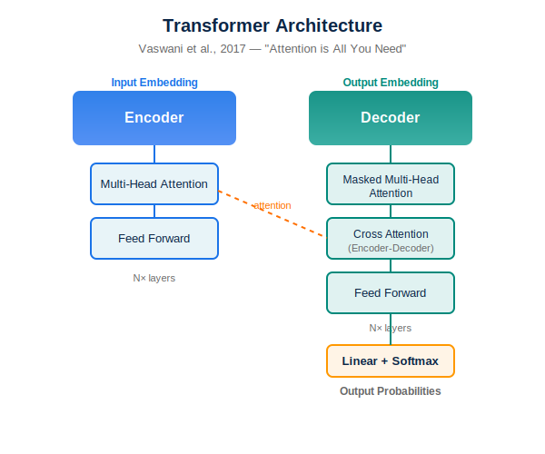

Transformers — Arquitetura Attention
Antes

Depois
Diagramas técnicos do paper 'Attention is All You Need' (Vaswani et al., 2017). Arquitetura encoder-decoder com multi-head attention.
Ver checklist para Computer Science
Checklist de conformidade — Computer Science Journals
Diretrizes para figuras técnicas em periódicos de computação e machine learning.
- Diagramas de arquitetura com camadas claramente rotuladas e conexões legíveis
- Uso consistente de cores e formas para diferentes tipos de componentes
- Notação matemática renderizada com fontes profissionais (LaTeX quando possível)
- Esquemas de dimensionalidade e flow de dados claramente indicados
- Legendas detalhadas explicando abreviações e símbolos técnicos
- Versões vetoriais (SVG/PDF) preferenciais para diagramas
- Gráficos de performance com eixos, unidades e intervalos de confiança claramente marcados
Observação: Journals como NeurIPS, ICML e ACL têm templates específicos — verificar antes da submissão.